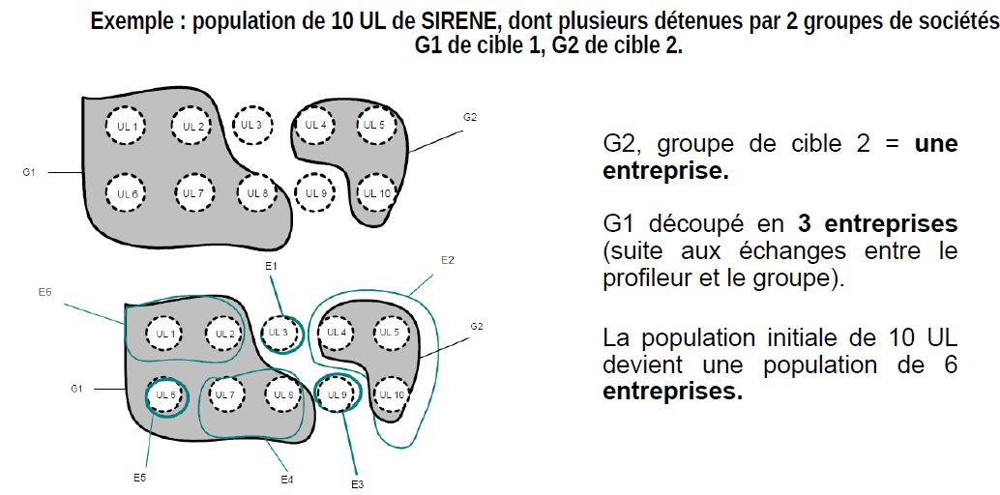

Extraction de Tableaux à l’aide de LLM Multimodaux
Soutenance de stage - SSP Lab & PTGU
23 septembre 2025
Le Contexte : le travail de profilage à l’INSEE
Le profilage : c’est quoi ?
Le profilage vise à définir une entreprise au sens économique, et non plus seulement juridique (Unité Légale - UL). 
{kind=link}
La Problématique : l’extraction du tableau “Filiales et Participations”
Une source d’information cruciale
- La construction des contours repose en grande partie sur les comptes sociaux dans le tableau”Filiales et Participations”.
{kind=link}
{kind=link}
Le but est de passer automatiquement du document brut à une table de données propre.
Les Données : un corpus hétérogène
Source et Caractéristiques
- Source : Les documents sont récupérés via l’API de l’INPI.
- Périmètre : La “Cible 1”, soit environ 60 groupes majeurs.
- Formats : Un mélange de PDF numériques (avec couche texte) et de PDF scannés (simples images), souvent de qualité variable.
Exemples de documents
{kind=link}
{kind=link}
Cette hétérogénéité rend les approches algorithmiques classiques peu robustes.
L’approche précédente
Le pipeline
La méthode précédente reposait sur un pipeline en plusieurs étapes :
- Identification de la page avec un modèle de classification de texte (
fastText). - Extraction de la structure du tableau. Pour cette étape, plusieurs modèles concurrents ont été évalués, dont :
TableNet: un modèle de segmentation d’image.Table Transformer: un modèle pré-entraîné sur la reconstruction de structure.
C’est l’approche Table Transformer qui a été retenue, formant la méthode finale.
Rupture Technologique : Les LLMs
Un point de départ de NLP
La première étape est de transformer les mots en nombres que le modèle peut manipuler.
- Tokenisation
Le texte est découpé en unités de base, les tokens (mots ou sous-mots)."Extraire ce tableau"➡️["Extraire", "ce", "tableau"]"anticonstitutionnel" ➡️ [anti][constitution][nel]
Un point de départ de NLP
- Vectorisation (Embedding)
Chaque token est associé à un vecteur numérique de grande dimension.
Ce vecteur représente la position sémantique du token dans un espace de concepts.
"Extraire" ➡️ [0.12, -0.45, ..]
Les mots aux significations proches auront des vecteurs proches dans cet espace.
{kind=link}
Le cœur du LLM : l’Architecture Transformer
Le Transformer traite cette séquence de vecteurs.
Son innovation : le mécanisme de self-attention (auto-attention).
Pour chaque token, le modèle pèse l’importance de tous les autres tokens de la séquence pour comprendre son contexte.
Ce processus reste purement textuel et “aveugle” à la mise en page.
Du LLM au LLM Multimodal
Comment apprendre à un modèle de langage à “voir” ?
La réponse méthodologique : traiter l’image comme une séquence de tokens, de la même manière que le texte.
- On ne donne pas au modèle une grille de pixels, mais une séquence de “tokens visuels”.
- Chaque token visuel représente une petite zone de l’image.
- Le modèle peut alors appliquer son mécanisme d’attention sur une séquence mixte de tokens de texte et de tokens visuels.
La “Tokenisation Visuelle” en pratique
Le processus se fait en 3 étapes clés :
Découpage en Patchs
L’image est découpée en une grille de petites imagettes (patches).Vectorisation
Chaque patch est transformé en un vecteur numérique, le token visuel.Séquençage
Le LLM traite alors cette nouvelle séquence de tokens visuels comme il le ferait pour une phrase.
Pipeline développé
Architecture
La solution est bâtie sur une architecture en 3 API.
- API Centrale : L’orchestrateur qui pilote le flux.
- API Marker : Le moteur d’analyse qui traite le document.
- Proxy Marker : Le superviseur qui monitore les appels au LLM.
.png)
Focus sur marker-pdf : une Approche Hybride
L’approche de la librairie marker-pdf est en plusieurs temps :
Segmentation rapide par vision (
Surya)
Un modèle spécialisé délimite les blocs de contenu (tableaux, textes…).Extraction initiale
Une première version du tableau est générée (OCR si besoin).Correction par LLM (
Gemma-3 27b it)
Le LLM affine cette première version en la comparant à l’image.
Résultat : une combinaison de la vitesse des modèles spécialisés et de la précision du LLM.
Le Pipeline de Traitement Global
Le processus complet, orchestré par l’API Centrale, est donc le suivant :
- Acquisition & Ciblage : Récupération du PDF (API INPI) et identification de la page (
fastText). - Isolation : Création d’un PDF temporaire avec la seule page d’intérêt pour focaliser l’analyse.
- Analyse Hybride par
marker-pdf: Application du pipeline (Surya + Gemma-3) sur la page isolée. - Restitution : Export au format JSON, qui préserve les structures complexes comme les cellules fusionnées.
Méthode d’Évaluation des Modèles
Le protocole
- Pour garantir une comparaison juste, le même jeu d’évaluation que l’ancienne méthode a été utilisé (74 tableaux annotés manuellement).
- Les mêmes métriques ont été calculées :
- Taux de colonnes récupérées
- Taux de lignes récupérées
- Taux de cellules numériques correctement extraites *
- Taux d’extraction parfaite (tableau 100% correct) *
* Métriques qui ont changé entre les projets et qui sont complexes à analyser
Résultats
Résultats bruts
| Métrique | Table Transformer | Approche LLM Hybride |
|---|---|---|
| Taux moyen de colonnes extraites | .80 | .71 |
| Taux moyen de lignes extraites | .76 | .70 |
| Taux moyen de cellules num. extraites | .56 | .60* |
| Taux d’extraction parfaite | .21 | .78* |
Des résultats en dessous de la méthode précédente expliqué par plusieurs facteurs
Une distribution avec une bimodalité très marquée
{kind=link}
{kind=link}
Médiane : colonnes 86% - lignes 92%
3e Quartile : colonnes 100% - lignes 100%
Concentration des erreurs sur quelques documents
{kind=link}
{kind=link}
La majorité des erreurs se concentre sur un petit nombre de documents particulièrement complexes, expliquant la baisse des moyennes globales.
Conséquence opérationnelles
- Impossibilité d’integration 100% automatisée
- Mais une détection des extractions fausses envisageable
- On peut penser “faire confiance” au pipeline sur certains cas et laisser l’expertise des profileurs pour d’autres
Perspectives
- Pistes pour le Modèle
- Fine-tuning : Envisageable à long terme si un corpus d’annotation conséquent est constitué, mais coûteux.
- Veille active : Tester les nouvelles générations de modèles et de logiciels
- Pistes pour l’Application
- Possibilité de tester plus de précision dans l’utilisation de marker
- optimisation de performance au niveau de l’OCR et du LLM lab